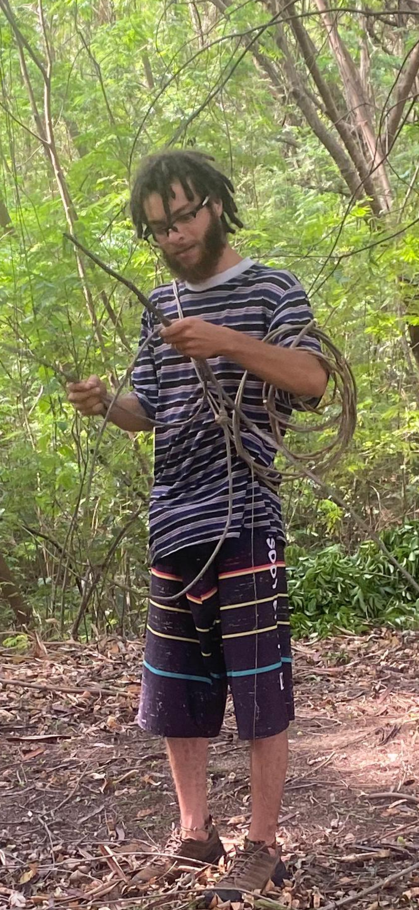
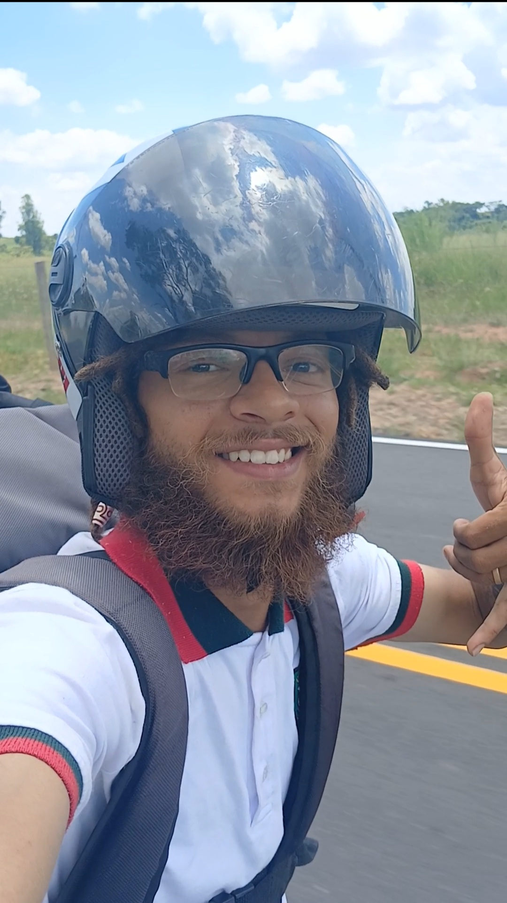

Olá meu nome é Rayan Marcelo de Oliveira Trindade. Nasci e cresci em Itu, a famosa "cidade dos exageros", onde cheguei ao mundo no dia 12 de dezembro de 2001. Atualmente, estou com 23 anos e sempre fui uma pessoa muito ecletica, receptiva a novas vivências e experiências.

Apesar de ter conhecimentos na área de informática, nunca atuei profissionalmente nesse campo. Utilizei meus conhecimentos principalmente para atender às minhas próprias necessidades e às de pessoas ao meu redor. Fui levado por uma paixão pelas duas rodas da bicicleta, que me conduziu à profissão de motoboy, uma profissão que amo muito.